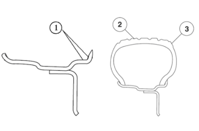

С помощью индикатора часового типа измерить величину биения колеса; при измерении необходимо снять Шина и измерять радиальное и торцевое биение по внутренним кромкам обода. Как показано на (Рисунке ①), закрепить индикатор часового типа рядом с узлом колеса и шины, медленно повернуть колесо на один оборот и записать показания индикатора; если измеренное значение превышает указанные ниже величины, а балансировка колеса не устраняет вибрацию, заменить колесо. Измерить свободное радиальное биение по центру протектора (Рисунок ②). На протектор можно наклеить полоску липкой ленты для создания гладкой поверхности. Измерить свободное торцевое биение с внешней стороны шины как можно ближе к протектору (Рисунок ③).

|
Легкосплавное колесо |
Радиальное биение |
Торцевое биение |
Шина |
Радиальное биение |
Торцевое биение |
|
17 дюймов: 0.3 mm 18 дюймов: 0.3 mm |
17 дюймов: 0.3 mm 18 дюймов: 0.3 mm |
≤1.0mm |
≤1.0mm |